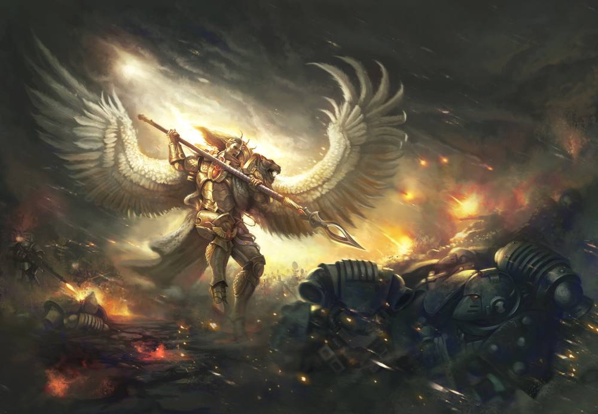
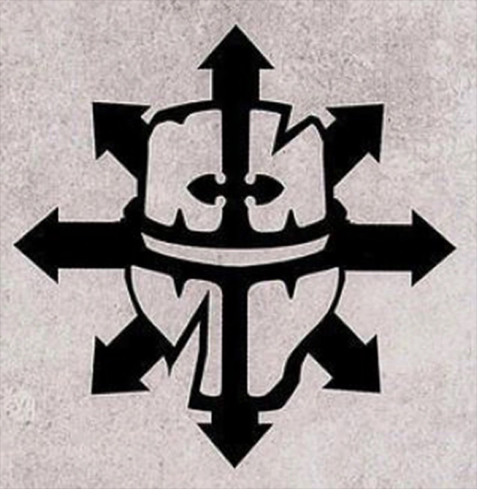
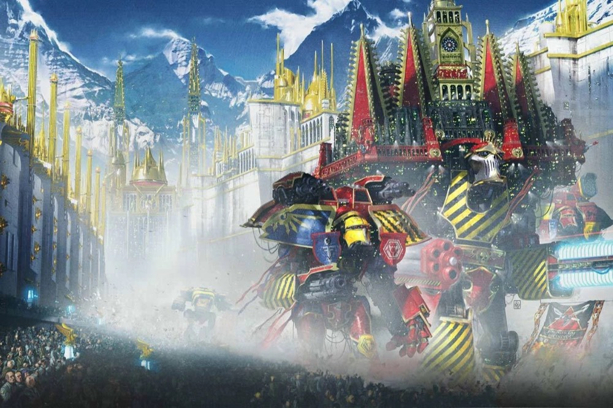

Battle of Beta-Garmon
| Battle of Beta-Garmon | |
|---|---|
| Part of the Horus Heresy | |
 Sanguinius in the fighting on Beta-Garmon II, where he took command of the loyalist host Artwork © Games Workshop | |
| Date | 010–013.M31 Early fighting for the cluster: 007–010.M31[a] |
| Location | Beta-Garmon cluster, Segmentum Solar: Beta-Garmon II (Nyrcon), Beta-Garmon III, Theta-Garmon V, Omega-Garmon and the Sea of Fire |
| Result | Both hosts were bled white. The Titan Legions of the loyalists were all but broken, and the final battle at Terra followed |
| Belligerents | |
| Loyalists  Knight Houses[d] | Traitors |
| Commanders and leaders | |
| (WIA) Wounded | |
| Strength | |
| Casualties and losses | |
| Loyalists | Traitors |
| Billions of civilians massacred[m] | |
The Battle of Beta-Garmon, also called Titandeath, was the last great battle of the Horus Heresy before the Siege of Terra. It was fought for the Beta-Garmon cluster in the Segmentum Solar, which held the last stable route to the Sol system. The traitor war host under the Warmaster Horus gathered an enormous force there, with Titans of several Legios. The loyalists, under Rogal Dorn and later Sanguinius, gathered Titans from nearly thirty Legios and hundreds of thousands of Imperial Army troops to bar the way. It was the largest battle between god-machines in history.[2][3]
The loyalists were driven from the cluster. The traitors overran Beta-Garmon II and III, and the way to Terra was opened. At the moment of victory, however, the Warmaster himself collapsed from an old wound and had to be carried from the field. Loyalist survivors, led by Sanguinius and Jaghatai Khan, withdrew to Terra. The cluster was left a ruin.[2]
Background
[edit]The cluster
[edit]The Beta-Garmon cluster survived the Age of Strife largely unharmed. Its worlds lay on stable Warp routes to Sol, and its forges and yards could repair a fleet. It became a muster ground and supply depot of the Great Crusade, and in 004.M31 the Space Wolves gathered there for the Censure of Prospero.[1] By the Heresy it was the only direct way to Terra that the storms had not closed.[1]
The first phase
[edit]Rebellion and invasion
[edit]After the Drop Site Massacre, Alpha Legion agents set the cluster's worlds at odds and invaded the nearby Paramar system, where a civil war broke out. A Reaver maniple of Legio Mortis and the Emperor's Children seized Beta-Garmon II and its capital, Nyrcon City. The Titans stormed the city while the Emperor's Children took the orbital fort and the rest of the planet.[1]
Between 007 and 010.M31 the cluster was a war zone. Loyalist forces cut off by the Ruinstorm gathered, a few ships at a time, but traitor reinforcements kept arriving as well.[1]
Dorn's counterattack
[edit]In 010.M31 Rogal Dorn sent the Imperial Fists and Salamanders, with Solar Auxilia and Legio Astorum, the Warp Runners, to retake Beta-Garmon II. They made early gains. The Emperor's Children and Alpha Legion counterattacked and nearly pushed them out again.[1]
The Disciples of the Flame arrived aboard the Ebon Drake. They were a warband of Shattered Legions led by the Salamanders Dreadnought Cassian Dracos and a loyalist Iron Warrior, Nârik Dreygur. They struck Nyrcon and killed both the Alpha Legion and Emperor's Children commanders on the planet, though they took heavy losses. The Imperial Fists drove off the Emperor's Children, and Dorn began to fortify the cluster against an attack by Horus.[1]
The muster
[edit]By 012.M31 the Ruinstorm was receding. Reinforcements arrived on both sides, and some Imperial troops went over to the Warmaster. Dorn determined that the cluster was to be held by troops that were not Astartes. He drew together hundreds of thousands of Imperial Army troops and Titan battlegroups from almost thirty loyalist Legios. By holding them at Beta-Garmon he hoped to avoid a war of Titans on Terra itself, and to delay the Warmaster until the Ultramarines and Dark Angels, whose approach was expected, could strike him from behind.[2][3]
Horus arrived with the main traitor fleet soon after.
Forces
[edit]Loyalists
[edit]The loyalist force was a creature of necessity. It had no single Legio to anchor it, and its Astartes were few. The Titan battlegroups included Legio Astorum, the Warp Runners, Legio Defensor, Legio Solaria and Legio Atarus. Knights of House Procon Vi and other houses fought beside them. The Imperial Army supplied hundreds of thousands of troops, among them Solar Auxilia cohorts and regiments newly raised in the cluster. Lord General Bollivar commanded the army. The Titan princeps, among them Mohana Mankata VI, were the heads of proud and independent orders, and they had never been placed under a single hand.[1]
Traitors
[edit]The Warmaster brought his own Legion, the Sons of Horus, with detachments of the Iron Warriors, Word Bearers and Emperor's Children, and the Alpha Legion working in the cluster's shadow. The Dark Mechanicum furnished Legio Mortis, Legio Fureans, Legio Vulpa and Legio Krytos, and the corrupted forge priests who tended them. Traitor Army regiments, some of them defectors from the loyalist muster, fought in the line. Imperial scholars name Dark Apostle Vorrjuk Kraal and Magos Ardim Protos among the leaders of the lesser contingents.[1]
The battle
[edit]Beta-Garmon II
[edit]Horus bombarded the planet and then sent in the Titans of Legio Mortis, Legio Fureans and Legio Vulpa. They broke through the defences and recaptured Nyrcon. The rest of the world fell quickly.[2]
Beta-Garmon III and the outer worlds
[edit]Beta-Garmon III held. Legio Defensor stood against attacks by the Sons of Horus and Iron Warriors. Legio Krytos, the God-Breakers, attacked the Mechanicum citadels on Alpha-Garmon IX, where Defensor and Astorum held them. On Omega-Garmon, Legio Atarus and a detachment of Legio Mortis fought a battle of which no good account survives.[1]
The Sea of Fire
[edit]
The fleets fought between Beta-Garmon II and III in a battle that the survivors called the Sea of Fire. The wreckage of the ships rained on both worlds for months. Legio Solaria, Legio Fureans, and the Knights of House Procon Vi fought the Dark Mechanicum over Theta-Garmon V and Beta-Garmon III. The traitors used a solar flare to blind the loyalist Titans, who were overrun. Iron Warriors siege battalions were later destroyed in turn.[1]
The loyalist defence was poorly coordinated. The Warp was disturbed, and forces arrived piecemeal. The Titan princeps refused to subordinate themselves to one another, and each Legio fought its own war. Imperial accounts describe this as the loyalists' greatest weakness.[1]
Sanguinius takes command
[edit]The turning point was the arrival of Sanguinius with the Blood Angels, and of Jaghatai Khan with the White Scars. Sanguinius took overall command. His authority, to the princeps and the generals alike, revived the defence. At Signus he had already been told what his brother intended, and Beta-Garmon was the first great field on which he stood against the Warmaster's host.[2] See Signus Campaign.[2]
The Titandeath
[edit]Sanguinius ordered a bombardment of Nyrcon. The traitors' entrenchments, void shields and storms of debris blunted it. He then committed the Titans. More than a thousand fought on Beta-Garmon II in the largest engagement of god-machines in history. Sanguinius personally killed the Imperator Titan Axis Mundi. Azkaellon, the commander of the Sanguinary Guard, led an assault on the star fort Anvil, which proved to be a trap. The Blood Angels withdrew before the fort destroyed itself, but its debris killed tens of thousands on both sides.[1]

While the loyalists were committed on Beta-Garmon II, Horus struck Beta-Garmon III with his own Legion, with about a hundred Titans of Legio Mortis, possessed engines of Legio Vulpa and Legio Krytos. They overran the defenders and destroyed the Carthega Telepathica, the astropathic station that coordinated the loyalist force. The defence lost its voice.[1]
At the moment of victory the Warmaster fell. A wound that Imperial accounts attribute to Leman Russ re-opened, and Horus collapsed. Horus Aximand and Falkus Kibre carried him to the Vengeful Spirit.[2]
Aftermath
[edit]In 013.M31 Sanguinius and Jaghatai Khan withdrew to Terra with the surviving loyalists. The traitors gathered at Ullanor, but the incapacity of the Warmaster and the corruption within their ranks delayed them. The path to Terra was still secure.[2]
The Beta-Garmon cluster was devastated and abandoned. Millions of soldiers died, and billions of civilians were massacred, a toll that exceeded the dead of the last five years of the Great Crusade. Many loyalist Legios needed millennia to recover. Resentment at having been sacrificed for time led some survivors of the Titan Legions to refuse to fight at the Siege of Terra. The traitors salvaged Titans from Beta-Garmon II and reanimated them by sorcery as revenant engines, which they used as cannon fodder at the Siege.[1][3]
Legacy
[edit]Beta-Garmon is regarded as the point at which the war became a matter of time. The loyalist Titan Legions never again took the field in such strength, and the cost of the battle is counted among the heaviest of the Heresy.[3]
Timeline
[edit]| Date | Event |
|---|---|
| 798–999.M30 | The Beta-Garmon cluster serves as a muster ground and supply depot of the Great Crusade. |
| 004.M31 | The Space Wolves gather at Beta-Garmon for the Censure of Prospero. |
| 006–007.M31 | After the Drop Site Massacre, Alpha Legion agents set the cluster at odds; civil war breaks out at Paramar. |
| 007.M31 | Legio Mortis and the Emperor's Children seize Beta-Garmon II and Nyrcon City. |
| 007–010.M31 | The cluster is a war zone as stranded forces of both sides gather. |
| 010.M31 | Rogal Dorn sends the Imperial Fists, Salamanders and Legio Astorum to retake Beta-Garmon II; the Disciples of the Flame strike Nyrcon. |
| 012.M31 | The Ruinstorm recedes; Dorn musters Imperial Army troops and Titans of almost thirty loyalist Legios; Horus arrives with the main traitor fleet. |
| 012.M31 | Horus retakes Nyrcon; Legio Defensor holds Beta-Garmon III; the void battle of the Sea of Fire. |
| 012–013.M31 | Sanguinius and Jaghatai Khan arrive; Sanguinius takes overall command. |
| 013.M31 | The Titandeath on Beta-Garmon II; Sanguinius destroys the Imperator Titan Axis Mundi. |
| 013.M31 | Horus overruns Beta-Garmon III and destroys the Carthega Telepathica, then collapses from his old wound. |
| 013.M31 | The loyalists withdraw to Terra; the traitors regroup at Ullanor. |
| 014.M31 | The Siege of Terra. |
See also
[edit]Notes
[edit]- ^ The muster and the main battle fall between 010 and 013.M31 in the Imperial chronologies. The fighting for the cluster began earlier, in 007.M31.
- ^ Survivors of the Shattered Legion, the Disciples of the Flame.
- ^ Among them Legio Astorum and Legio Atarus.
- ^ Such as House Procon Vi.
- ^ With Legio Fureans, Legio Vulpa and Legio Krytos.
- ^ Estimated; the strength of the Blood Angels, White Scars and Imperial Fists on the field is not recorded.
- ^ Estimated; Imperial records say only "hundreds of thousands".
- ^ War-maniples from nearly 30 Titan Legions; over 1,000 Titans on Beta-Garmon II alone.
- ^ Estimated; five Legions under the Warmaster. The main war host was never counted.
- ^ Anvil was a star fort.
- ^ Horus was wounded at the moment of triumph.
- ^ The Alpha Legion and Emperor's Children commanders on Nyrcon were killed.
- ^ A toll beyond the last five years of the Great Crusade.
References
[edit]- ^ a b c d e f g h i j k l m n o Age of Darkness (Anthology) edited by Christian Dunn, "Rebirth" by Chris Wraight. Horus Heresy: Collective Visions, pp. 91-94, 97-98, 138, 236-237, 240-241.
- ^ a b c d e f g h McNeill, Graham. A Thousand Sons (novel). Black Library, pp. 225-226, 228-229, 230, 236, 241, 244, 255-259, 262-263. Abnett, Dan. Prospero Burns (novel). Black Library, pp. 339, 342-343, 350-351, 353-355.
- ^ a b c d McNeill, Graham. The Outcast Dead (novel). Black Library. Bligh, Alan. The Horus Heresy - Book Seven: Inferno (Forge World Series). Black Library, pp. 22-32, 38, 65.